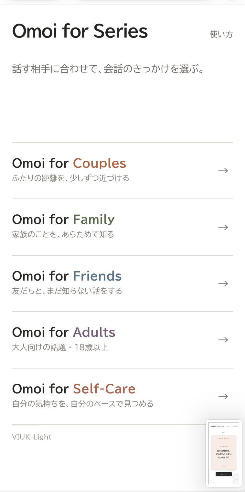

SafeSearch 4 — X-filtering system
ローカルで動く、Webフィルタリング。
URLとページ本文をブラウザー内で判定。外部の分類APIへ送らず、カテゴリ別の設定とサイトごとの許可・ブロックルールで閲覧を制御します。
- 確認済み
- Microsoft Edge · macOS
- 公開タグ
- v1.0.0 · 2026.10.17
ローカルで動く、Webフィルタリング。
URLとページ本文をブラウザー内で判定。外部の分類APIへ送らず、カテゴリ別の設定とサイトごとの許可・ブロックルールで閲覧を制御します。



相手や目的に合わせて、会話や振り返りを始める。
恋人、家族、友だちとの会話や、ひとりでの振り返りのための5シリーズです。Lite / Deepで話題の踏み込み度を、通常 / 深掘りで追加の問いの表示を選べます。

AIとの会話から、関係や物語を育てる。
キャラクター、世界観、記憶を扱いながら、利用者のペースで会話を続けるアプリです。